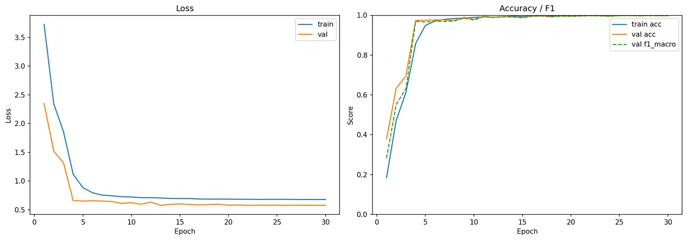

Configuração num lugar só
Um YAML tipado (OmegaConf com dataclasses) controla o experimento. Para trocar a EfficientNet por uma ResNet ou ConvNeXt, basta mudar uma linha.
Visão computacional · Práticas Extensionistas · PUCPR · 2026
Um classificador que reconhece 10 condições da folha do tomateiro a partir de uma única foto. Acertou 99,9% das imagens de teste, que ele nunca tinha visto.

O problema
Quanto antes a doença aparece, menos a lavoura perde. A ideia era fazer o diagnóstico com uma foto.
Fiz como prestação de serviço, pensando no dia a dia de uma empresa de agtech. É um sistema completo de visão computacional, dos dados até a API, que reconhece nove doenças do tomateiro e a folha saudável.
Como funciona
PlantVillage (tomate): 14.529 imagens divididas de forma estratificada em 10.169, 2.180 e 2.180 (treino, validação e teste). Imagens corrompidas ficaram de fora.
Usei uma EfficientNet-B0 pré-treinada. Primeiro treinei só a cabeça, com o resto congelado, e depois liberei a rede inteira.
Dei peso maior às classes raras na função de perda e escolhi o melhor modelo pelo F1-macro.
Precisão mista (AMP), warmup com decaimento por cosseno, early stopping e checkpoints para retomar o treino.
Modelo exportado para TorchScript e ONNX, API REST em FastAPI e uma página de demonstração em português.
O salto
Quando liberei a rede inteira, a acurácia de validação pulou de 0,63 para 0,97.
Na primeira fase, só a cabeça aprende. Quando a rede toda passa a treinar, ela se ajusta às texturas das folhas e o resultado sobe de uma vez.

Todas as classes
As 10 classes passaram de 0,997 de F1, inclusive a mais rara.
O vírus do mosaico tinha só 45 imagens no teste. Com o peso extra na função de perda, o modelo acertou todas (F1 = 1,0) em vez de ignorar essa classe.

Engenharia
Um YAML tipado (OmegaConf com dataclasses) controla o experimento. Para trocar a EfficientNet por uma ResNet ou ConvNeXt, basta mudar uma linha.
TensorBoard e MLflow ficam atrás da mesma interface, e cada execução salva métricas, curvas e relatórios.
Exportei para TorchScript e ONNX conferindo se as saídas batem com o modelo original, e os checkpoints são carregados de forma segura.
Minha GPU de 4 GB não dava conta, então levei o treino para uma Tesla P100 gratuita na nuvem e automatizei o ajuste da versão do PyTorch.